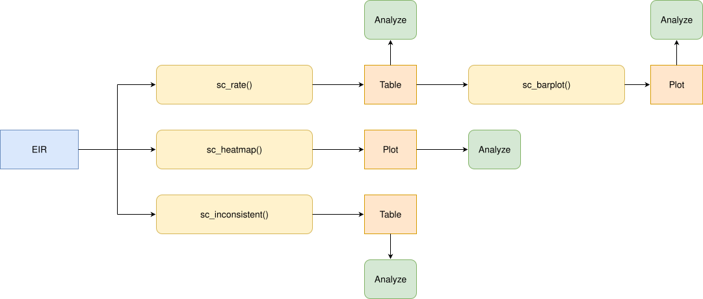

Comparación de secuencia de dosis
OPS/CIM
30 de octubre de 2026
Source:vignettes/articles/es/dose_sequence_comparison_es.Rmd
dose_sequence_comparison_es.RmdFundamento
Muchas vacunas de un esquema nacional de vacunación se administran como una serie ordenada de dosis (p. ej., DTP1, DTP2 y DTP3). Cada dosis se construye sobre la anterior, por lo que una persona no debería tener registrada una dosis posterior sin las dosis previas, y cada dosis debería administrarse después de la anterior.
Cuando un Registro Nominal de Vacunación electrónico (RNVe) contiene personas con una dosis saltada (p. ej., DTP1 y DTP3 sin DTP2), o con dosis administradas fuera de orden cronológico (p. ej., DTP2 administrada antes que DTP1), esto suele indicar problemas de calidad de datos: dosis registradas con un número de dosis equivocado, dosis administradas pero nunca registradas, o registros que no fueron vinculados correctamente a la misma persona. Estos problemas sesgan cualquier análisis posterior que dependa del número de dosis, como los análisis de cobertura, abandono o esquema completo.
El módulo de comparación de secuencia de dosis permite evaluar, persona por persona, si las dosis de una secuencia ordenada fueron registradas de forma consistente. Una secuencia solo se considera consistente cuando cumple ambas verificaciones:
- Sin dosis saltadas: no falta ninguna dosis anterior de la secuencia.
- Orden cronológico: las dosis recibidas fueron administradas en el orden de la secuencia.
Dado que se trata de un indicador nominal (evaluado persona por persona), cada persona se asigna a un único lugar de residencia, por lo que todos los resultados pueden desagregarse por nivel geográfico.
Nota
Todas las funciones utilizadas para los análisis de comparación de secuencia de dosis dentro de immunABC comienzan con el prefijo
sc_.
Glosario
Divisiones político-geográficas
A lo largo de esta viñeta se hace referencia a distintos niveles de división político-geográfica. Estos niveles son definidos por cada país o territorio y pueden recibir nombres diferentes. immunABC no depende de esos nombres locales; por eso, el usuario debe recodificar sus variables para ajustarlas a la estructura que utiliza el paquete.
En concreto, immunABC puede distinguir tres niveles administrativos que, listados del nivel superior al inferior, son: ADM0, ADM1 y ADM2.
- ADM0: El país. Este es el nivel administrativo más alto.
- ADM1: La primera subdivisión geográfica del país. ADM0 contiene varias subdivisiones ADM1.
- ADM2: La segunda subdivisión geográfica del país. Cada ADM1 contiene varias subdivisiones ADM2.
Secuencia de dosis
Un vector ordenado de dosis a evaluar, que se entrega a todas las
funciones sc_ a través del parámetro vaccines,
p. ej. c("DTP1", "DTP2", "DTP3"). El orden del vector es el
orden en que las dosis deberían administrarse. Solo se evalúan las
personas con al menos una dosis de la secuencia.
Categorías de consistencia de la secuencia
Una secuencia es consistente cuando:
- No se salta ninguna dosis anterior, es decir, las dosis recibidas son las primeras dosis de la secuencia. Una persona que aún no termina la secuencia (p. ej., solo DTP1, o DTP1 y DTP2) puede ser consistente: puede que simplemente no haya alcanzado la edad para la siguiente dosis, o que haya abandonado el esquema (vea el módulo de Tasa de abandono nominal).
- Cada dosis recibida fue administrada después de la dosis anterior
recibida en la secuencia. De forma predeterminada, dos dosis
administradas el mismo día también se consideran fuera de orden (vea
allow_same_day).
Una secuencia es inconsistente cuando falla alguna
de las verificaciones: falta una dosis antes de la última dosis recibida
y/o las dosis fueron administradas fuera de orden cronológico. Cuando
una persona tiene al menos dos dosis de la secuencia y una de ellas no
tiene fecha de vacunación (date_vax), el orden cronológico
no puede evaluarse por completo; si no se encuentra ningún otro
problema, la secuencia se clasifica como DATE_MISSING.
Para una secuencia DTP1, DTP2,
DTP3:
| Dosis recibidas | Fechas | Categoría | Dosis saltadas | Fuera de orden |
|---|---|---|---|---|
DTP1 |
CONSISTENT |
|||
DTP1 + DTP2 |
DTP1 antes que DTP2 | CONSISTENT |
||
DTP1 + DTP2 + DTP3 |
DTP1 antes que DTP2 antes que DTP3 | CONSISTENT |
||
DTP1 + DTP2 |
DTP2 antes que DTP1 | INCONSISTENT |
✔ | |
DTP1 + DTP2 |
DTP2 sin date_vax
|
DATE_MISSING |
||
DTP2 |
INCONSISTENT |
DTP1 |
||
DTP3 |
INCONSISTENT |
DTP1 + DTP2 |
||
DTP1 + DTP3 |
DTP1 antes que DTP3 | INCONSISTENT |
DTP2 |
|
DTP2 + DTP3 |
DTP3 antes que DTP2 | INCONSISTENT |
DTP1 |
✔ |
Uso
Cargar los datos
Las funciones de este módulo requieren que proporcione su RNVe en el formato estándar de immunABC.
RNVe
El conjunto de datos immunabc::immunABC.EIR proporciona
una tabla nominal simulada con eventos individuales de vacunación de un
Registro Nominal de Vacunación electrónico (RNVe). Cada fila corresponde
a una vacunación de una persona.
immunABC.EIR %>% head() %>% kable(caption = "Ejemplo de Registro Nominal de Vacunación electrónico")| ID | date_birth | date_vax | ADM1_residence | ADM2_residence | ADM1_occurrence | ADM2_occurrence | dose |
|---|---|---|---|---|---|---|---|
| 191997 | 2023-08-08 | 2023-12-26 | ADM1_4 | ADM2_4_35 | ADM1_4 | ADM2_4_35 | DTP2 |
| 212189 | 2023-12-20 | 2023-12-26 | ADM1_5 | ADM2_5_61 | ADM1_5 | ADM2_5_61 | BCG RN |
| 118063 | 2022-09-15 | 2023-12-26 | ADM1_2 | ADM2_2_5 | ADM1_2 | ADM2_2_5 | DTP1 |
| 118063 | 2022-09-15 | 2023-12-26 | ADM1_2 | ADM2_2_5 | ADM1_2 | ADM2_2_5 | YFV1 |
| 130751 | 2022-10-27 | 2023-12-12 | ADM1_5 | ADM2_5_55 | ADM1_5 | ADM2_5_55 | YFV1 |
| 136532 | 2021-09-21 | 2023-12-26 | ADM1_3 | ADM2_3_12 | ADM1_3 | ADM2_3_12 | SRP1 |
-
ID: Número único de identificación de la persona. - Fecha de nacimiento (
date_birth): Fecha de nacimiento de la persona. - Fecha de vacunación (
date_vax): Fecha del evento de vacunación. -
ADM1_residence/ADM2_residence: Primer y segundo nivel administrativo geográfico de residencia. -
ADM1_occurrence/ADM2_occurrence: Primer y segundo nivel administrativo geográfico donde ocurrió la vacunación. - Dosis (
dose): Variable combinada que representa el tipo de vacuna y su número de dosis correspondiente (p. ej., DTP1).
Análisis de comparación de secuencia de dosis
Flujo de trabajo esperado
El conjunto de funciones sc_ contiene cuatro funciones
que trabajan en conjunto:
-
sc_rate()— calcula el porcentaje de secuencias consistentes e inconsistentes, agregado por nivel geográfico. -
sc_barplot()— visualiza el resultado desc_rate()como un gráfico de barras apiladas. -
sc_heatmap()— visualiza cómo se distribuyen las personas entre todas las combinaciones de dosis recibidas, consistentes e inconsistentes, como un mapa de calor. -
sc_inconsistent()— lista cada persona con una secuencia inconsistente, con la fecha de cada dosis en una tabla con formato de esquema.
La figura a continuación muestra el flujo de trabajo esperado.

A lo largo de esta viñeta evaluaremos la secuencia DTP1,
DTP2, DTP3.
dtp_sequence <- c("DTP1", "DTP2", "DTP3")Paso 1 — Calcular la consistencia de la secuencia con
sc_rate()
sc_rate() evalúa la secuencia de cada persona y
devuelve, para cada unidad geográfica, el conteo y el porcentaje de
personas en cada categoría. El parámetro aggregated
controla cómo se muestran las secuencias inconsistentes:
-
aggregated = TRUE(predeterminado): clasifica cada secuencia comoCONSISTENT,INCONSISTENToDATE_MISSING. -
aggregated = FALSE: mantieneCONSISTENTyDATE_MISSINGcomo categorías únicas y desglosaINCONSISTENTen cada combinación de dosis recibidas (p. ej.,DTP1 + DTP3). Las combinaciones administradas fuera de orden cronológico se marcan con el sufijo(out of order)(p. ej.,DTP1 + DTP2 (out of order)).
rate_aggregated <- sc_rate(
data.EIR = immunABC.EIR,
vaccines = dtp_sequence,
geo_level = "ADM1",
aggregated = TRUE
)## Warning in .validate_duplicates_sequence(prepare_EIR, vaccines): Warning: 1800
## ID-dose combination(s) are duplicated in data.EIR. Only the earliest date_vax
## of each one is kept. We recommend you verify for duplicates before running the
## process to increase accuracy.
rate_aggregated %>% kable(digits = 2, caption = "Consistencia de la secuencia por ADM1 (agregada)")| ADM1 | sequence | consistent | n | total | rate |
|---|---|---|---|---|---|
| ADM1_1 | CONSISTENT | TRUE | 2505 | 3468 | 72.23 |
| ADM1_1 | INCONSISTENT | FALSE | 963 | 3468 | 27.77 |
| ADM1_2 | CONSISTENT | TRUE | 11894 | 19187 | 61.99 |
| ADM1_2 | INCONSISTENT | FALSE | 7293 | 19187 | 38.01 |
| ADM1_3 | CONSISTENT | TRUE | 52960 | 88447 | 59.88 |
| ADM1_3 | INCONSISTENT | FALSE | 35487 | 88447 | 40.12 |
| ADM1_4 | CONSISTENT | TRUE | 7273 | 10707 | 67.93 |
| ADM1_4 | INCONSISTENT | FALSE | 3434 | 10707 | 32.07 |
| ADM1_5 | CONSISTENT | TRUE | 3905 | 5716 | 68.32 |
| ADM1_5 | INCONSISTENT | FALSE | 1811 | 5716 | 31.68 |
Observe la advertencia: cuando una persona tiene la misma dosis
registrada más de una vez, solo se conserva la fecha de vacunación
(date_vax) más temprana. Se recomienda verificar los
duplicados antes de ejecutar el análisis.
rate_disaggregated <- sc_rate(
data.EIR = immunABC.EIR,
vaccines = dtp_sequence,
geo_level = "ADM1",
aggregated = FALSE
)
rate_disaggregated %>%
filter(ADM1 == "ADM1_1") %>%
kable(digits = 2, caption = "Consistencia de la secuencia en ADM1_1 (desagregada)")| ADM1 | sequence | consistent | n | total | rate |
|---|---|---|---|---|---|
| ADM1_1 | CONSISTENT | TRUE | 2505 | 3468 | 72.23 |
| ADM1_1 | DTP1 + DTP2 (out of order) | FALSE | 3 | 3468 | 0.09 |
| ADM1_1 | DTP1 + DTP2 + DTP3 (out of order) | FALSE | 22 | 3468 | 0.63 |
| ADM1_1 | DTP1 + DTP3 | FALSE | 76 | 3468 | 2.19 |
| ADM1_1 | DTP1 + DTP3 (out of order) | FALSE | 1 | 3468 | 0.03 |
| ADM1_1 | DTP2 | FALSE | 154 | 3468 | 4.44 |
| ADM1_1 | DTP2 + DTP3 | FALSE | 298 | 3468 | 8.59 |
| ADM1_1 | DTP2 + DTP3 (out of order) | FALSE | 7 | 3468 | 0.20 |
| ADM1_1 | DTP3 | FALSE | 402 | 3468 | 11.59 |
Parámetros aceptados
-
data.EIR: Tabla del RNVe en formato immunABC. -
vaccines: Vector de caracteres ordenado de al menos dos dosis, p. ej.c("DTP1", "DTP2", "DTP3"). -
geo_level:"ADM0"(predeterminado),"ADM1"o"ADM2". -
aggregated: Lógico, con valor predeterminadoTRUE. Indica si todas las secuencias inconsistentes se agrupan en una sola categoríaINCONSISTENT. -
birth_cohorts: Vector numérico con el o los años de cohorte de nacimiento a filtrar. El valor predeterminadoNULLutiliza todas las cohortes disponibles. -
allow_same_day: Lógico, con valor predeterminadoFALSE. Indica si dos dosis consecutivas administradas el mismo día se consideran en orden cronológico. Las dosis de una misma serie de vacunas no deberían administrarse el mismo día, pero esta regla puede flexibilizarse para secuencias que combinan vacunas distintas. -
fix_residence: Lógico, con valor predeterminadoTRUE. Vea Manejo de inconsistencias de residencia más abajo.
El resultado contiene la categoría (sequence), una
columna consistent (TRUE/FALSE,
NA para DATE_MISSING), el número de personas
(n), el total de personas con al menos una dosis de la
secuencia (total) y el porcentaje (rate).
Manejo de inconsistencias de residencia
Dado que cada persona se evalúa como un todo, debe asignarse a un
único lugar de residencia. Si la residencia registrada de una persona no
es la misma en todos sus registros (por ejemplo, se mudó entre su dosis
de DTP1 y DTP3, y el registro anterior nunca se actualizó), las
funciones sc_ muestran una advertencia, y el parámetro
fix_residence controla cómo se maneja:
-
fix_residence = TRUE(predeterminado): todos los registros de una persona se corrigen para usar elADM1_residence/ADM2_residencede su vacunación más reciente. -
fix_residence = FALSE: los valores de residencia se dejan tal como fueron registrados, y a cada persona se le asigna la residencia de su primer registro.
sc_rate() y sc_heatmap() solo verifican la
residencia cuando los resultados se desagregan por debajo de
"ADM0". sc_inconsistent() siempre la verifica,
ya que su resultado incluye la residencia de cada persona.
Paso 2 — Visualizar la consistencia de la secuencia con
sc_barplot()
El resultado de sc_rate() puede pasarse directamente a
sc_barplot() para generar un gráfico de barras apiladas por
unidad geográfica.
sc_barplot(
data = rate_aggregated,
sequence_name = "DTP1 - DTP3"
)
Con aggregated = FALSE, cada combinación inconsistente
se muestra con un color distinto:
sc_barplot(
data = rate_disaggregated,
sequence_name = "DTP1 - DTP3"
)
Parámetros aceptados
-
data: Resultado desc_rate(). -
sequence_name: Etiqueta de la secuencia de dosis que se muestra en el subtítulo del gráfico. Valor predeterminado:"dose sequence". -
within_ADM1: Vector de caracteres para filtrar unidades ADM1 específicas cuandogeo_level = "ADM2". Valor predeterminado:NULL. -
plot_missing: Booleano. Si esTRUE(predeterminado), las secuenciasDATE_MISSINGse muestran como un segmento separado de la barra (gris), de modo que todas las barras sumen 100%.
Interpretación
Cada barra representa una unidad geográfica. El segmento
CONSISTENT (azul) se muestra en la parte inferior de cada
barra, los segmentos inconsistentes se apilan encima y
DATE_MISSING (gris) se muestra en la parte superior. Las
áreas con una mayor proporción de secuencias inconsistentes deben
priorizarse para la revisión de la calidad de los datos. La vista
desagregada muestra qué dosis se salta con mayor frecuencia: por
ejemplo, una proporción alta de DTP2 + DTP3 (se saltó
DTP1) puede indicar que las primeras dosis se están
registrando con un número de dosis equivocado, o que las primeras dosis
se administran en lugares que no reportan al RNVe.
Las secuencias marcadas como (out of order) suelen ser
poco frecuentes, por lo que incluso porcentajes pequeños merecen
atención. Pueden deberse a errores de digitación en la fecha de
vacunación (date_vax), a dosis registradas con un número de
dosis equivocado (p. ej., DTP2 registrada como DTP1 y viceversa), o a
registros de dos personas distintas vinculados al mismo ID. El módulo de
Comparación de
consistencia de fechas puede ayudar a investigar las fechas
involucradas.
Paso 3 — Explorar todas las combinaciones de dosis recibidas con
sc_heatmap()
sc_heatmap() recibe directamente el RNVe y muestra, para
cada unidad geográfica de residencia (columnas), el porcentaje de
personas con cada combinación de dosis recibidas (filas). Las filas se
dividen en paneles:
-
Consistent: la “diagonal” de la secuencia, de menos
a más dosis (
DTP1,DTP1 + DTP2,DTP1 + DTP2 + DTP3). - Date missing: secuencias que no pueden evaluarse por completo (solo se muestra si existen).
- Inconsistent: cada combinación inconsistente, de la más a la menos frecuente.
De forma predeterminada se muestran las secuencias consistentes y los porcentajes se calculan sobre todas las personas con al menos una dosis de la secuencia en cada área, por lo que cada columna suma 100%. Mirar solo lo que está mal, sin el contexto de lo que está bien, no muestra qué tan grande es el problema.
sc_heatmap(
data.EIR = immunABC.EIR,
vaccines = dtp_sequence,
geo_level = "ADM1"
)
Una vez claro el tamaño del problema, use
show_consistent = FALSE para profundizar en las secuencias
inconsistentes. Los porcentajes se recalculan solo sobre las secuencias
inconsistentes, por lo que cada columna suma el 100% de las secuencias
inconsistentes del área:
sc_heatmap(
data.EIR = immunABC.EIR,
vaccines = dtp_sequence,
geo_level = "ADM1",
show_consistent = FALSE
)
Parámetros aceptados
-
data.EIR: Tabla del RNVe en formato immunABC. -
vaccines: Vector de caracteres ordenado de al menos dos dosis. -
geo_level: Nivel geográfico de residencia que se muestra en las columnas:"ADM0"(predeterminado),"ADM1"o"ADM2". -
show_consistent: Lógico, con valor predeterminadoTRUE. Indica si se muestran las secuencias consistentes yDATE_MISSING(porcentajes sobre todas las personas), o solo las secuencias inconsistentes (porcentajes sobre las secuencias inconsistentes). -
within_ADM1: Vector de caracteres para filtrar unidades ADM1 específicas. Valor predeterminado:NULL. -
birth_cohorts: Vector numérico con el o los años de cohorte de nacimiento a filtrar. El valor predeterminadoNULLutiliza todas las cohortes disponibles. -
allow_same_day: Lógico, con valor predeterminadoFALSE. -
fix_residence: Lógico, con valor predeterminadoTRUE. -
digits: Número de decimales en las etiquetas. Valor predeterminado:0.
Interpretación
Compare cada fila inconsistente con el panel de secuencias consistentes: una combinación inconsistente tan frecuente como una consistente apunta a un problema sistemático de registro, más que a errores de captura ocasionales. Cuando una combinación predomina en un área específica (una celda más oscura que el resto de su fila), sugiere una práctica local de registro que vale la pena investigar.
Paso 4 — Inspeccionar las secuencias inconsistentes individuales con
sc_inconsistent()
sc_inconsistent() devuelve una tabla a nivel de persona
con todas las secuencias inconsistentes en formato de esquema: una fila
por persona y una columna por cada dosis de la secuencia, con la fecha
en que se administró cada dosis (NA si no fue
recibida).
inconsistent_df <- sc_inconsistent(
data.EIR = immunABC.EIR,
vaccines = dtp_sequence
)
inconsistent_df %>% head(10) %>% kable(caption = "Muestra de secuencias inconsistentes")| ID | date_birth | ADM1_residence | ADM2_residence | DTP1 | DTP2 | DTP3 | sequence | skipped_doses | out_of_order |
|---|---|---|---|---|---|---|---|---|---|
| 94 | 2021-05-05 | ADM1_3 | ADM2_3_10 | NA | NA | 2022-07-09 | DTP3 | DTP1 + DTP2 | FALSE |
| 96 | 2018-09-18 | ADM1_3 | ADM2_3_7 | NA | 2022-08-14 | NA | DTP2 | DTP1 | FALSE |
| 98 | 2020-05-04 | ADM1_2 | ADM2_2_5 | NA | NA | 2023-01-10 | DTP3 | DTP1 + DTP2 | FALSE |
| 99 | 2020-05-04 | ADM1_2 | ADM2_2_5 | NA | NA | 2023-01-10 | DTP3 | DTP1 + DTP2 | FALSE |
| 115 | 2020-01-13 | ADM1_3 | ADM2_3_21 | NA | 2023-11-23 | NA | DTP2 | DTP1 | FALSE |
| 121 | 2020-03-03 | ADM1_2 | ADM2_2_5 | NA | NA | 2023-09-24 | DTP3 | DTP1 + DTP2 | FALSE |
| 132 | 2020-03-14 | ADM1_2 | ADM2_2_5 | NA | NA | 2022-03-29 | DTP3 | DTP1 + DTP2 | FALSE |
| 135 | 2020-04-07 | ADM1_2 | ADM2_2_5 | NA | NA | 2022-04-26 | DTP3 | DTP1 + DTP2 | FALSE |
| 136 | 2019-12-02 | ADM1_3 | ADM2_3_8 | NA | NA | 2022-09-27 | DTP3 | DTP1 + DTP2 | FALSE |
| 142 | 2019-12-31 | ADM1_2 | ADM2_2_5 | NA | NA | 2022-02-18 | DTP3 | DTP1 + DTP2 | FALSE |
Parámetros aceptados
-
data.EIR: Tabla del RNVe en formato immunABC. -
vaccines: Vector de caracteres ordenado de al menos dos dosis. -
birth_cohorts: Vector numérico con el o los años de cohorte de nacimiento a filtrar. El valor predeterminadoNULLutiliza todas las cohortes disponibles. -
allow_same_day: Lógico, con valor predeterminadoFALSE. -
fix_residence: Lógico, con valor predeterminadoTRUE.
La columna sequence muestra la combinación de dosis
recibidas, la columna skipped_doses muestra las dosis que
faltan antes de la última dosis recibida (NA si no falta
ninguna) y la columna out_of_order indica si las dosis
fueron administradas fuera de orden cronológico. Una persona puede tener
ambos problemas a la vez. Las secuencias DATE_MISSING no se
incluyen. Esta tabla puede exportarse para flujos de corrección a nivel
de registro, por ejemplo, para buscar las dosis saltadas bajo otro
número de dosis o bajo otro ID.
Resumen
El módulo sc_ ofrece un flujo completo para evaluar si
las secuencias ordenadas de dosis están registradas de forma consistente
en los datos del RNVe, donde una secuencia solo es consistente cuando no
se salta ninguna dosis y las dosis fueron administradas en orden
cronológico. sc_rate() y sc_barplot() entregan
una visión geográfica de las secuencias inconsistentes,
sc_heatmap() pone cada combinación inconsistente de dosis
en el contexto de las consistentes, y sc_inconsistent()
permite la inspección a nivel de registro de las personas con secuencias
inconsistentes. En conjunto, ayudan a los gestores de datos y a los
analistas de salud pública a detectar y priorizar las correcciones de
calidad de datos antes de los análisis que dependen del número de dosis,
como los análisis de cobertura, abandono o esquema completo.